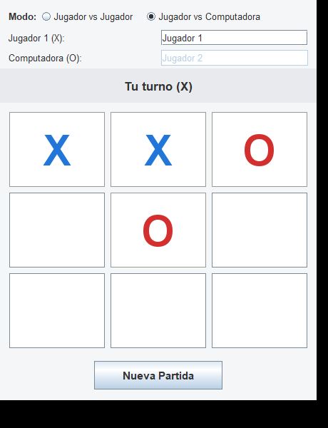
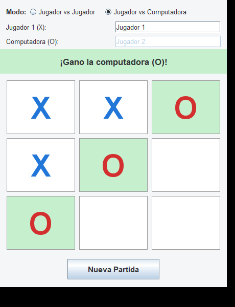
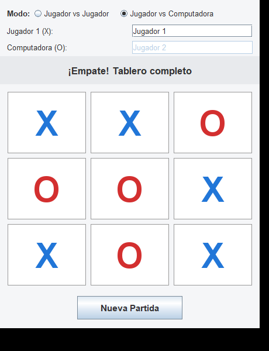
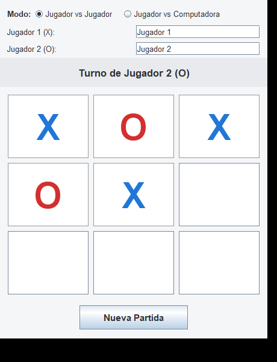

| Nombre del estudiante: | Denis Valenzuela | Miguel Ayala | Mishell Reyes |
| Carne: | 0908-25-5160 | 0908-25- 5188 | 0908-25-4884 |
| Catedratico: | Gustavo Mendez |
| Curso: | Programacion II |
| Fecha de entrega: | ____________ |
El presente informe describe el desarrollo del Juego de Totito (tres en linea)
implementado en el lenguaje Java, con una interfaz grafica construida
exclusivamente con las librerias javax.swing y java.awt.
El programa integra un agente de Inteligencia Artificial capaz de enfrentar al
usuario tomando decisiones a traves del algoritmo de busqueda en arbol
Minimax, garantizando un juego optimo e imbatible. Ademas del modo contra la
computadora, el juego incluye un modo para dos jugadores, de manera que dos
personas puedan enfrentarse en el mismo equipo.
El objetivo es aplicar los principios de la programacion orientada a objetos, separando claramente la logica del juego de la interfaz grafica, y demostrar la correcta implementacion recursiva del algoritmo Minimax sobre un juego de suma cero.
El juego permite elegir entre dos modos mediante botones de seleccion:
Los nombres de los jugadores son editables desde la propia ventana y se reflejan en los mensajes de turno y de resultado. En el modo contra la computadora, el segundo nombre se sustituye por "Computadora".
| Requerimiento | Como se cumple |
|---|---|
| Interfaz de usuario | Ventana Swing con tablero 3×3, barra de estado con el turno y anuncio de ganador/empate, y boton Nueva Partida. |
| Validacion de movimientos | El metodo Tablero.estaLibre() impide ocupar casillas usadas
o fuera de los limites; las casillas ocupadas se deshabilitan. |
| Logica de IA (Minimax) | La clase IA_Minimax explora el arbol de decisiones y elige
siempre el movimiento optimo: gana o empata, nunca pierde. |
| Control del juego | Deteccion automatica de victoria (3 en linea) y empate, con reinicio funcional del tablero. |
| Modos de juego | Selector entre Jugador vs Jugador y Jugador vs Computadora, con nombres de jugador editables en la interfaz. |
La solucion se divide en clases independientes siguiendo los principios de la
programacion orientada a objetos. La logica del juego (Tablero,
IA_Minimax) no depende de Swing; la clase JuegoMain
actua como puente entre la logica y la interfaz grafica.
Notacion: el rombo relleno indica composicion (JuegoMain contiene una
instancia de Tablero, Jugador e IA_Minimax); la flecha punteada indica una
dependencia (IA_Minimax utiliza Tablero para explorar el arbol de juego).
La clase interna CasillaButton extends JButton representa cada casilla
y pinta su simbolo con color propio incluso deshabilitada.
El algoritmo Minimax es el estandar para juegos de suma cero como el totito. Se construye un arbol de decisiones con todos los estados posibles: los nodos donde juega la IA son maximizadores (buscan el mayor puntaje) y los nodos donde juega el humano son minimizadores (buscan el menor puntaje). El valor de un estado terminal se define asi:
O): +10 − profundidad.X): −10 + profundidad.0.Restar la profundidad hace que la IA prefiera ganar lo antes posible y retrasar al maximo una eventual derrota. Como el algoritmo asume que el rival tambien juega de forma optima, la IA nunca pierde: gana o empata.
minimax
int minimax(Tablero tablero, boolean esTurnoIA, int profundidad) {
// Casos base: estados terminales del arbol de juego
char ganador = tablero.ganador();
if (ganador == simboloIA) return PUNTAJE_VICTORIA - profundidad; // gana la IA
if (ganador == simboloHumano) return profundidad - PUNTAJE_VICTORIA; // gana el humano
if (tablero.estaLleno()) return 0; // empate
if (esTurnoIA) {
// Nivel MAX: la IA elige la jugada con el mayor puntaje
int mejor = Integer.MIN_VALUE;
for (cada casilla libre) {
tablero.colocar(fila, col, simboloIA); // intenta
int valor = minimax(tablero, false, profundidad + 1);
tablero.vaciar(fila, col); // deshace (backtracking)
mejor = Math.max(mejor, valor);
}
return mejor;
} else {
// Nivel MIN: el humano elige la jugada con el menor puntaje
int mejor = Integer.MAX_VALUE;
for (cada casilla libre) {
tablero.colocar(fila, col, simboloHumano); // intenta
int valor = minimax(tablero, true, profundidad + 1);
tablero.vaciar(fila, col); // deshace (backtracking)
mejor = Math.min(mejor, valor);
}
return mejor;
}
}
El metodo mejorMovimiento prueba cada casilla libre, evalua la posicion
resultante con minimax y devuelve la jugada con el puntaje mas alto para
la IA. La jugada se deshace tras evaluarla (backtracking) para no alterar el
tablero real.
public int[] mejorMovimiento(Tablero tablero) {
int mejorValor = Integer.MIN_VALUE;
int[] mejor = null;
for (cada casilla libre) {
tablero.colocar(fila, col, simboloIA);
int valor = minimax(tablero, false, 1); // ahora responde el humano
tablero.vaciar(fila, col);
if (valor > mejorValor) { mejorValor = valor; mejor = {fila, col}; }
}
return mejor;
}
Complejidad: el arbol completo del totito tiene a lo sumo 9! = 362 880 estados. Al podar las ramas que terminan antes (victorias tempranas), el numero de posiciones realmente exploradas es mucho menor, por lo que la IA responde de forma instantanea.
Se realizaron dos tipos de prueba: una verificacion exhaustiva automatica (recorriendo todas las jugadas posibles del humano) y capturas de pantalla de la interfaz real para los escenarios exigidos.
Resultado de recorrer todas las ramas del arbol con la IA jugando de forma optima:
Partidas evaluadas : 569 Victorias de la IA : 386 Empates : 183 Victorias humano : 0 RESULTADO: OK - la IA es imbatible.
El jugador humano no gano en ninguna de las 569 lineas de juego evaluadas.




Requisito: Java JDK 11 o superior.
javac -encoding UTF-8 -d out src\com\umg\totito\*.java java -cp out com.umg.totito.JuegoMain
Tambien se puede ejecutar con doble clic en el archivo ejecutar.bat,
que compila y abre el juego automaticamente. El proyecto tambien puede abrirse
directamente en cualquier IDE (IntelliJ IDEA, Eclipse o NetBeans) y ejecutar la
clase JuegoMain.
Tablero, Jugador,
IA_Minimax, JuegoMain) demuestra la aplicacion
de los principios de la programacion orientada a objetos.______________________________________
Nombre y firma del estudiante